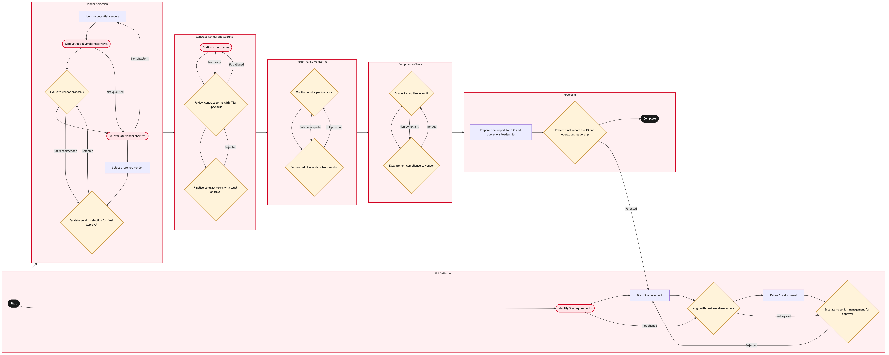

Updated 2026-08-21
Service Level Management and Vendor Governance
Process flow
Click to zoom

Process steps
▼
Phase 1 — SLA Definition
5 steps
| Step | Activity | Role | System | Input | Output | KPI | Dec | Exc | Pain point |
|---|---|---|---|---|---|---|---|---|---|
| 1.1 | Identify SLA requirements | ITSM Specialist | ITSM PlatformC | Business needs and regulatory standards | SLA requirement document | 24 hours to complete | N | Y | Inconsistent business requirements from different departments |
| 1.2 | Draft SLA document | ITSM Specialist | ITSM PlatformC | SLA requirement document | Initial draft of SLA document | 48 hours to complete | N | N | Complex regulatory clauses that require legal review |
| 1.3 | Align with business stakeholders | ITSM Specialist | Integration PlatformU | Initial draft of SLA document | Approved SLA requirement document | 72 hours to complete | Y | N | Stakeholder disagreement on service levels |
| 1.4 | Refine SLA document | ITSM Specialist | ITSM PlatformC | Approved SLA requirement document | Finalized SLA document | 24 hours to complete | N | N | Time-consuming legal review cycles |
| 1.5 | Escalate to senior management for approval | ITSM Specialist | Integration PlatformU | Finalized SLA document | Approved SLA document | 48 hours to complete | Y | N | Senior management delays in decision-making |
▼
Phase 2 — Vendor Selection
6 steps
| Step | Activity | Role | System | Input | Output | KPI | Dec | Exc | Pain point |
|---|---|---|---|---|---|---|---|---|---|
| 2.1 | Identify potential vendors | ITSM Specialist | Databricks LakehouseB | SLA document | Vendor shortlist | 48 hours to complete | N | N | Limited vendor pool matching SLA criteria |
| 2.2 | Conduct initial vendor interviews | ITSM Specialist | Integration PlatformU | Vendor shortlist | Vendor interview notes | 72 hours to complete | N | Y | Vendors not meeting initial criteria |
| 2.3 | Evaluate vendor proposals | ITSM Specialist | Databricks LakehouseB | Vendor interview notes | Vendor proposal evaluation report | 48 hours to complete | Y | N | Complex vendor proposals that require detailed review |
| 2.4 | Re-evaluate vendor shortlist | ITSM Specialist | Databricks LakehouseB | Vendor interview notes | Updated vendor shortlist | 72 hours to complete | N | Y | No suitable vendors in initial pool |
| 2.5 | Select preferred vendor | ITSM Specialist | Integration PlatformU | Vendor proposal evaluation report | Preferred vendor selection | 24 hours to complete | N | N | Difficult decision-making due to similar proposals |
| 2.6 | Escalate vendor selection for final approval | ITSM Specialist | Integration PlatformU | Preferred vendor selection | Approved vendor selection | 48 hours to complete | Y | N | Senior management delays in decision-making |
▼
Phase 3 — Contract Review and Approval
3 steps
| Step | Activity | Role | System | Input | Output | KPI | Dec | Exc | Pain point |
|---|---|---|---|---|---|---|---|---|---|
| 3.1 | Draft contract terms | Legal Specialist | Integration PlatformU | Approved SLA document and vendor selection | Initial draft of contract terms | 48 hours to complete | N | Y | Legal team unavailable due to workload |
| 3.2 | Review contract terms with ITSM Specialist | ITSM Specialist | Integration PlatformU | Initial draft of contract terms | Contract review report | 48 hours to complete | Y | N | Complex legal clauses that require clarification |
| 3.3 | Finalize contract terms with legal approval | Legal Specialist | Integration PlatformU | Contract review report | Approved contract terms | 24 hours to complete | Y | N | Senior management delays in decision-making |
▼
Phase 4 — Performance Monitoring
2 steps
| Step | Activity | Role | System | Input | Output | KPI | Dec | Exc | Pain point |
|---|---|---|---|---|---|---|---|---|---|
| 4.1 | Monitor vendor performance | ITSM Specialist | Integration PlatformU | Approved contract terms and SLA document | Vendor performance report | Weekly reporting | Y | N | Inconsistent data collection from vendors |
| 4.2 | Request additional data from vendor | ITSM Specialist | Integration PlatformU | Vendor performance report | Complete vendor performance report | 3 business days to complete | Y | N | Vendor reluctance to provide additional data |
▼
Phase 5 — Compliance Check
2 steps
| Step | Activity | Role | System | Input | Output | KPI | Dec | Exc | Pain point |
|---|---|---|---|---|---|---|---|---|---|
| 5.1 | Conduct compliance audit | ITSM Specialist | SIEM and SOCU | Vendor performance report | Compliance audit report | 48 hours to complete | Y | N | Complex regulatory requirements that require detailed review |
| 5.2 | Escalate non-compliance to vendor | ITSM Specialist | Integration PlatformU | Compliance audit report | Non-compliance resolution plan | 72 hours to complete | Y | N | Vendor refusal to address non-compliance issues |
▼
Phase 6 — Reporting
2 steps
| Step | Activity | Role | System | Input | Output | KPI | Dec | Exc | Pain point |
|---|---|---|---|---|---|---|---|---|---|
| 6.1 | Prepare final report for CIO and operations leadership | ITSM Specialist | Integration PlatformU | Vendor performance report and compliance audit report | Final report | 24 hours to complete | N | N | Time-consuming data aggregation and analysis |
| 6.2 | Present final report to CIO and operations leadership | ITSM Specialist | Integration PlatformU | Final report | Approval of SLA agreement and vendor governance | 48 hours to complete | Y | N | CIO and operations leadership delays in decision-making |
Swim lanes
ITSM Specialist1.1 1.2 1.3 1.4 1.5 2.1 2.2 2.3 2.4 2.5 2.6 3.2 4.1 4.2 5.1 5.2 6.1 6.2
Legal Specialist3.1 3.3
Systems touched
ITSM PlatformCIntegration PlatformUDatabricks LakehouseBSIEM and SOCU
Key performance indicators
- SLA document drafted within 48 hours
- Vendor selected within 72 hours of initial review
- Contract finalized within 120 hours of approval
- Weekly vendor performance reporting established
- Compliance audit completed within 48 hours
Risks and control points
- Inconsistent business requirements leading to delayed SLA definition
- Limited vendor pool causing extended selection process
- Complex legal clauses delaying contract finalization
- Inconsistent data collection from vendors impacting performance monitoring
- Vendor refusal to address non-compliance issues leading to prolonged audits
Air Canada Process Wiki — process and systems reference compiled from public sources
for IT Application Management and User Support pre-sales discovery.
Built 2026-08-21. Every system carries an evidence tier: tier C is an industry pattern and tier U is an open
question, and neither should be asserted as fact about Air Canada without confirmation in discovery.
Not affiliated with or endorsed by Air Canada. Air Canada, Aeroplan and Altitude are trademarks of Air Canada.